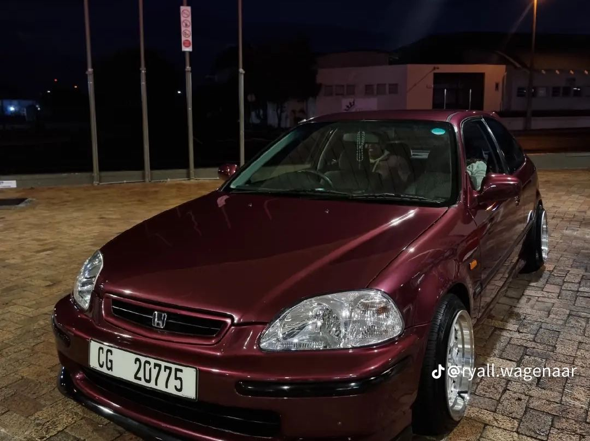
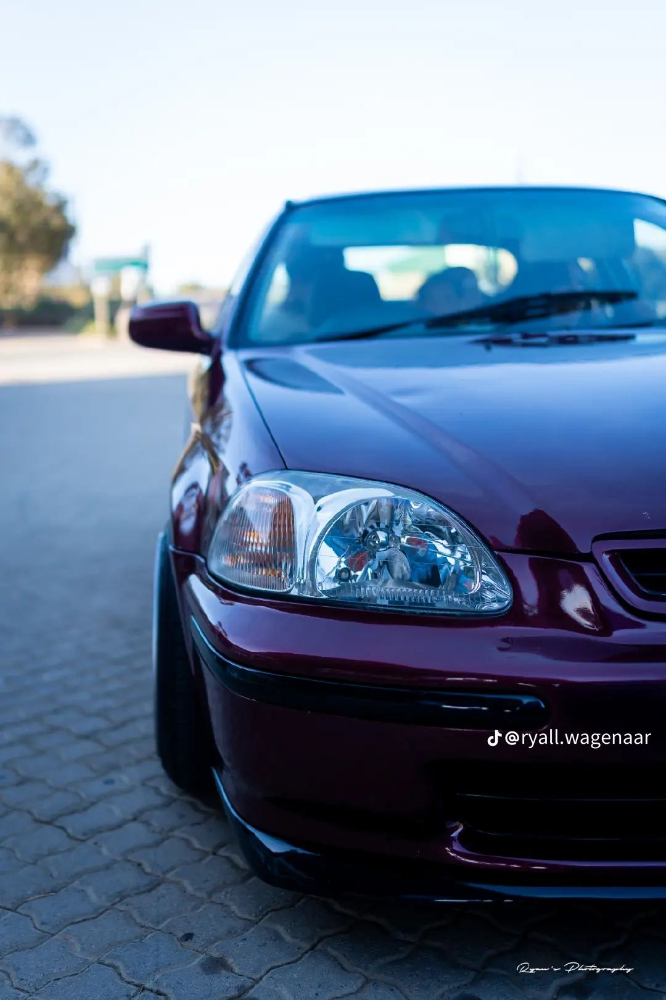
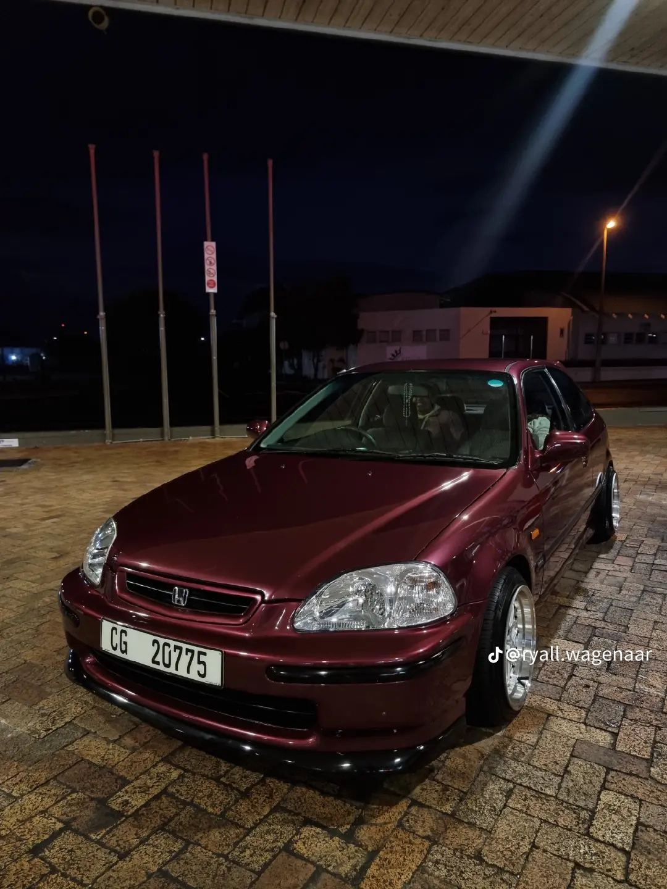

Cleaner | Shinier | Protected
Car Detailing & Ceramic Coating in Oudtshoorn
Ryall's Auto Detailing Centre (RADC) restores showroom shine to cars, bakkies and SUVs across the Klein Karoo and Garden Route — from a R130 wash to multi-step paint correction and 5-year ceramic protection.
- 5.0 on Google (13 reviews)
- Colridge View, Oudtshoorn
- Transparent, published prices
Detailing services in Oudtshoorn
Every job is done by hand with machine-polishing equipment and proper decontamination — we don't just wash cars, we detail and polish every surface for a deeper, richer gloss.
Ceramic Coating
12-month-plus and 5-year ceramic packages, paired with 1-, 2- or 3-step polishing for a slick, protected finish.
From R1 000View details →
Paint Correction & Polishing
1-step, 2-step and 3-step machine polishing to remove swirls, oxidation and dullness and bring back deep gloss.
From R1 000View details →
Valets & Washes
From a quick wash & vacuum to a full valet, decon wash, clay bar and engine-bay detail.
From R130View details →
Headlight Restoration
Yellow, cloudy headlights sanded, polished and protected — safer night driving and a fresher-looking car.
From R200View details →
Dents, Scratches & Resprays
Scratch and faded-paint removal, minor dent repairs, rim repairs, bumper alignment and full resprays.
From R200View details →
See every price
30+ packages for sedans, hatches, SUVs, bakkies and minibuses — all listed upfront.
Full price list →Built for Karoo sun, dust and Garden Route salt air
Oudtshoorn summers regularly push past 35 °C, and the Klein Karoo sun is relentless on clear coats, plastics and headlights. Gravel roads coat paint in fine dust, and coastal trips leave salt behind. That combination is exactly what causes faded, chalky paint and yellow headlights.
- Correction before protection — we polish out swirls and oxidation first, so ceramic coatings seal in a perfect finish, not the damage.
- Packages for every vehicle — separate pricing for hatches, sedans, SUVs, double cabs and minibuses, so you only pay for your size.
- Upfront prices — our full catalogue is published on this site and on WhatsApp.
- Local and owner-run — you deal directly with the person detailing your car.

Booking in four easy steps
- WhatsApp usSend your make, model and a few photos to 081 087 6539.
- Get a clear quoteWe recommend the right package and confirm the price.
- Drop off in OudtshoornBring your vehicle to 27 Heunis Street on your booked day.
- Collect the shineWe walk you through the result and aftercare tips.

Oudtshoorn, the Klein Karoo & the Garden Route
Our centre is in Oudtshoorn, the heart of the Klein Karoo — within an hour of George and Mossel Bay and an easy drive from De Rust, Calitzdorp, Dysselsdorp and Prince Albert.
- Oudtshoorn & Bongolethu
- George & Wilderness
- Mossel Bay & Hartenbos
- Knysna & Plettenberg Bay
- De Rust, Dysselsdorp & Calitzdorp
- Ladismith & Uniondale
- Prince Albert & Beaufort West
Frequently asked questions
Where is Ryall's Auto Detailing Centre in Oudtshoorn?
RADC is at 27 Heunis Street, Colridge View, Oudtshoorn 6620, just off the R62 / 5th Avenue near the Toekomsrus Community Centre. Use the Google Maps link on our contact page for directions.
How much does car detailing cost in Oudtshoorn?
At RADC a basic wash and vacuum starts at R130, a full valet from R1 000 (sedan/hatch), machine polishing from R1 000 and polish-plus-ceramic packages from R1 299.99. See the full price list; final quotes depend on vehicle size and condition.
Do you do ceramic coating?
Yes. We offer 12-month-plus and 5-year ceramic packages, each combined with a 1-, 2- or 3-step polish so the coating locks in corrected, glossy paint. Read about ceramic coating.
How do I book?
The quickest way is WhatsApp on 081 087 6539. Send your vehicle make and model, a couple of photos and the service you're interested in, and we'll confirm a price and date.
I live in George, Mossel Bay or the Karoo. Is it worth the drive?
Many of our services, like paint correction and ceramic coating, are once-off investments that last months or years, so a single trip to Oudtshoorn is well worth it. We serve drivers from George, Mossel Bay, Knysna, Plettenberg Bay, De Rust, Calitzdorp, Ladismith, Prince Albert and Beaufort West.
Can you fix yellow, cloudy headlights?
Yes. Headlight restoration (from R250) sands away the oxidised layer, polishes the lens clear and protects it. If there is haze or moisture inside the lamp, our headlight repair (from R200) cleans them from the inside.
RADC at a glance
- Business
- Ryall's Auto Detailing Centre (RADC)
- What we do
- Car detailing, ceramic coating, paint correction, valets, headlight restoration, dent & scratch repair, resprays
- Address
- 27 Heunis Street, Colridge View, Oudtshoorn, 6620
- Hours
- Mon–Sat 8am–5pm · Sunday closed
- Phone / WhatsApp
- 081 087 6539
- Prices
- From R130 (wash & vacuum) to R6 000 (SUV 5-year ceramic package)
- Google rating
- 5.0 ★ from 13 reviews
- Serving
- Oudtshoorn, the Klein Karoo, Garden Route (George, Mossel Bay, Knysna, Plett) and Central Karoo
Ready for that showroom shine?
Send us a WhatsApp with your car, a couple of photos and what you'd like done. We'll reply with a quote and the next open slot.